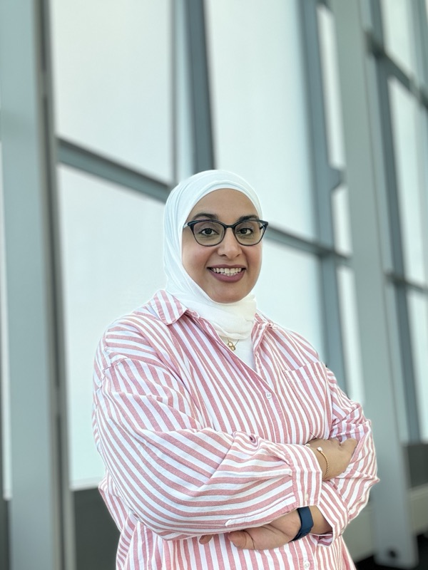

2023
Ph.D. — Computer Science and Engineering
Pennsylvania State University, USA
Modeling a Clinical Acoustic Information System Using Physics-Informed Machine Learning
Assistant Professor · Kuwait University
Computer engineer and educator working at the intersection of physics-informed machine learning, AI safety, and AI for cybersecurity.


About
I'm an Assistant Professor in the Department of Information Science at Kuwait University's College of Life Sciences. I hold a Ph.D. in Computer Science and Engineering from Penn State (2023), where my dissertation — Modeling a Clinical Acoustic Information System Using Physics-Informed Machine Learning — combined deep learning with the governing physics of ultrasound wave propagation for use in medical imaging and therapy.
Before the Ph.D., I earned my M.Sc. and B.Sc. in Computer Engineering at Kuwait University, and I spent six years in the field — first in Network Security at the KU Center of Information Systems, then as a Computer Engineer in the Vice Dean Office for Development and Planning coordinating university-wide IT projects.
My current research sits across three threads: physics-informed neural networks for wave equations and clinical acoustics, AI safety for large language models, and AI for cybersecurity. In the classroom I teach foundational courses in computing and build interactive tools — like Device Anatomy — to make hardware tangible for students.
Education
Pennsylvania State University, USA
Modeling a Clinical Acoustic Information System Using Physics-Informed Machine Learning
Kuwait University
Mitigating the Effects of Replay Attacks in Wireless Sensor Networks
Kuwait University
Graduation Project — Eye-hint Footprint for the Visually Impaired
Research
Four active research threads — each linked to representative publications, code, or paper artifacts.
PINN-based modeling of ultrasound wave propagation in homogeneous and inhomogeneous media — including multi-frequency encoding, attention to loss weights, and treatment of soft / hard initial-boundary conditions. Core focus of my Ph.D. work and ongoing.
See publicationsA hybrid framework for detecting prompt-injection and jailbreak attempts against large language models. Combines deterministic signature checks with learned classifiers, evaluated on adversarial benchmarks.
View repositoryNotebooks and datasets that demonstrate how machine learning supports phishing detection, network-traffic anomaly detection, and real-time threat monitoring. Designed for both research and classroom use.
View repositoryEarlier and ongoing work on securing wireless sensor networks against replay attacks (AODV-based defenses), cryptographic and randomization techniques for secure data disposal, and characterizing cyber threats to children and teenagers on online social networks.
See publicationsHeat-stress monitoring on the Kuwait University campus — an active research project addressing student and staff safety under Kuwait's extreme summer conditions.
Publications
Peer-reviewed journal and conference publications, reverse chronological.
Designing Non-Human Enclosures in ChatGPT: A Prompt-Based Approach
International Journal of Architectural Computing, 14780771251352960.
Multifrequency Encoding in PINNs for Precision Wave Equation Modeling in Inhomogeneous Media
IEEE UFFC Joint Symposium.
Modeling the Wave Equation Using Physics-Informed Neural Networks Enhanced With Attention to Loss Weights
ICASSP 2023 — IEEE International Conference on Acoustics, Speech and Signal Processing.
Wave Equation Modeling via Physics-Informed Neural Networks: Models of Soft and Hard Constraints for Initial and Boundary Conditions
Sensors, 23(5), 2792.
Physics-Informed Neural Networks with Resampling Technique to Model Ultrasound Wave Propagation of a Multi-Element Transducer
IEEE International Ultrasonics Symposium.
A Combination of Deep Neural Networks and Physics to Solve the Inverse Problem of Burger's Equation
IEEE EMBC Conference.
Modeling the Forward Wave Propagation Using Physics-Informed Neural Networks
IEEE International Ultrasonics Symposium.
Securing Ad-Hoc On-Demand Distance Vector Protocol in Wireless Sensor Networks: Working with What the Node Can Offer
IEEE International Conference on Computing Sciences and Engineering.
E-Learning Systems Requirements Elicitation
International Journal of Virtual and Personal Learning Environments, 7(1), 44–55.
Cryptography and Randomization to Dispose of Data and Boost System Security
Cogent Engineering.
Mining Attributes of Cyber Threats to Children and Teenagers of Kuwait in Online Social Networks
Ministry of Interior National Conference for Protecting Children Safety on Social Networks.
Teaching
Department of Information Science, College of Life Sciences, Kuwait University.
Foundational course on computer organization and IT infrastructure, aligned to Tanenbaum & Austin's Structured Computer Organization (6th ed.). Covers the levels of a computer, processors and memory hierarchy, secondary storage, I/O, digital logic, and pipelining.
Open the course tool — Device AnatomyAn interactive 3D explorer that lets students take apart real laptops, tablets, and phones — exploding layers, tracing data flows, zooming from board to chip to DRAM cell, and connecting every component back to a Tanenbaum chapter and ISC230 learning outcome.
Source on GitHubDepartment of Information Science, Kuwait University.
Student Projects
A selection of recent course projects. Project titles are linked when the team's repository is public.
Each team built a working parallel-vs-sequential implementation and reported on Amdahl's Law and measured speed-ups.
Counts word frequencies across 10 books, comparing a sequential
loop with a Python multiprocessing Pool that maps
books across worker processes.
Sequential vs parallel pipeline for grayscale conversion and resizing across 100 images. The team measured runtimes, scaled worker counts, and analyzed performance against Amdahl's Law.
Parallel dictionary-attack simulator that compares the performance and security characteristics of two hashing algorithms using Python's multiprocessing.
PyTorch neural-network training timed on CPU vs GPU with matched models and parameters, demonstrating how GPU parallelism shifts performance characteristics.
Comparison of sequential and parallel web-scraping implementations to illustrate I/O-bound concurrency speed-ups at the IT-infrastructure level.
Hands-on security engineering with realistic threat models, attacker simulations, and defensive implementations.
Practical pen-testing of DVWA and OWASP Juice Shop through a Burp Suite proxy, identifying and exploiting common web-application vulnerabilities and documenting mitigations.
End-to-end phishing campaign built with GoPhish on Kali Linux to test user awareness in a controlled educational setting, with analysis of click-through behavior and recommended training improvements.
A reversible ransomware behavior simulator for controlled malware analysis. Cannot spread, persist, or operate outside its designated sandbox directory — built under instructor supervision in an isolated VM.
Flask web application implementing Argon2id password hashing, TOTP-based multi-factor authentication, JWT sessions, rate limiting, and progressive account lockout — paired with brute-force and credential-stuffing scripts to empirically validate every defense.
Advising
Current graduate students I co-advise on research and capstone projects.
Topic · ISO/IEC 27035 compliance · EB-IMAT
Co-advised with Prof. Kassem Saleh
Experience
Feb 2024 — Present
Assistant Professor
Department of Information Science, Kuwait University
Sep — Dec 2022
Lecturer Assistant
School of Electrical Engineering and Computer Science, Pennsylvania State University
Oct 2015 — 2018
Computer Engineer
Vice Dean Office of Development and Planning, Kuwait University — coordinated university-wide IT projects, implemented server virtualization, supported KU's international ranking submissions
Dec 2012 — 2015
Junior Computer Engineer
Network Security Section, Center of Information Systems, Kuwait University — Cisco firewalls, VPNs, SSL certificates
Sep 2011 — 2012
Teaching Assistant
Department of Computer Engineering, Kuwait University — C++ and Java labs, online course development
Service: Coordinator of the Research and Graduate Studies Committee, and member of the Social and Student Activities Committee — both in the Department of Information Science. Reviewer for the IEEE International Ultrasonics Symposium and Cogent OA publications.
Certifications
Fundamentals of Deep Learning
Microsoft Technology Associate (MTA)
Microsoft Office Suite (MOS) Specialist
CompTIA Security+
Certified Ethical Hacker (CEH)
CCNA Security
CCNA Network Fundamentals
Contact
For research collaboration, supervision inquiries, or invited talks.